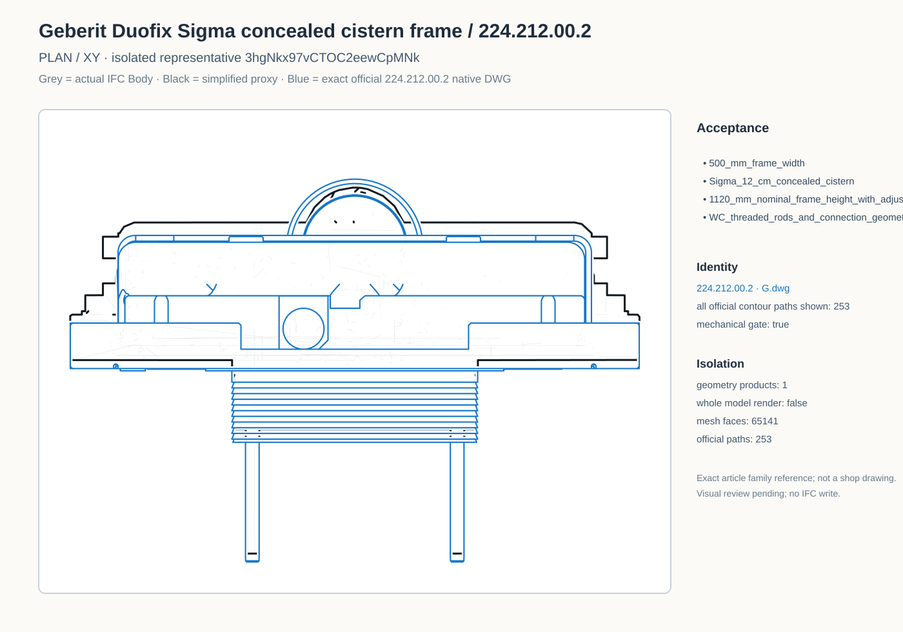
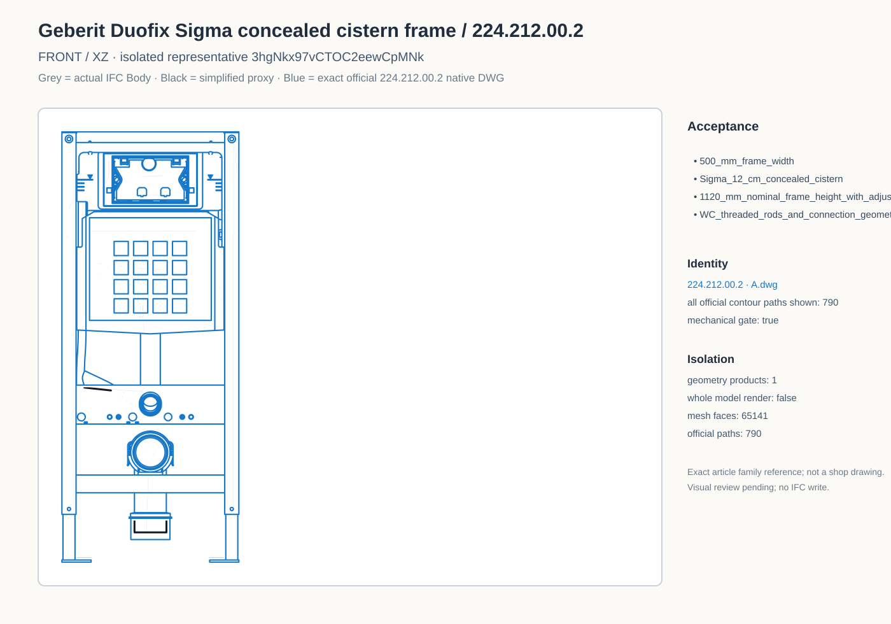
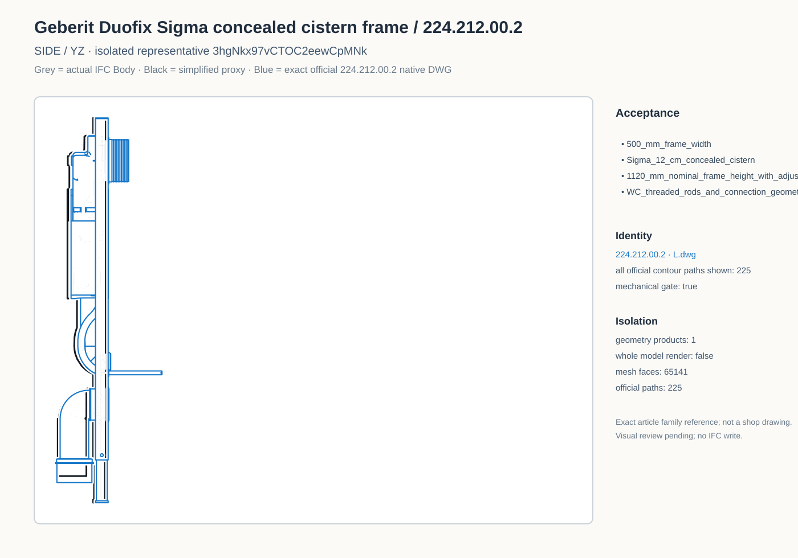
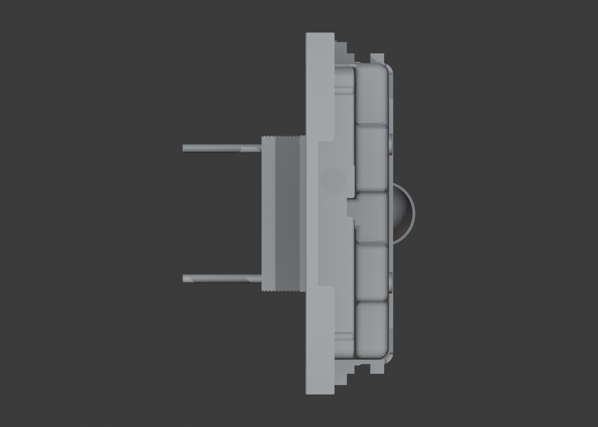
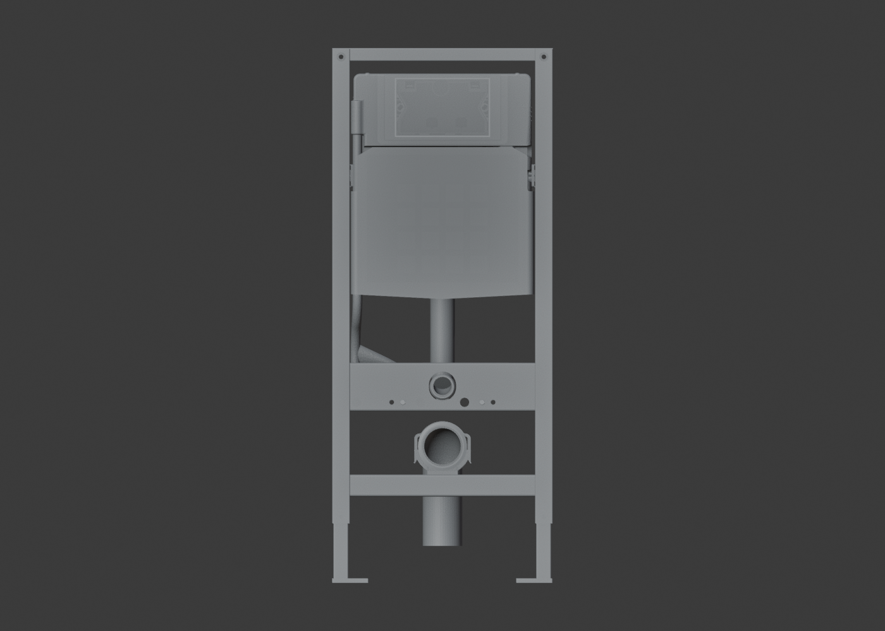
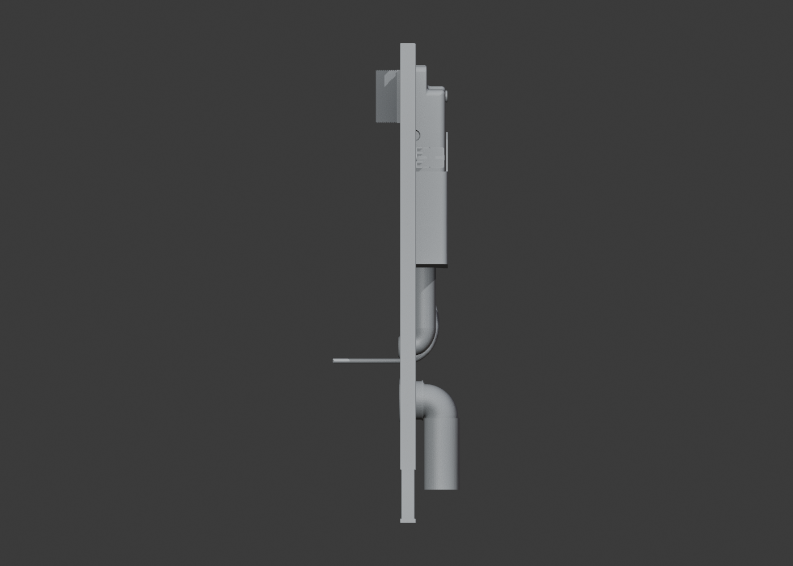
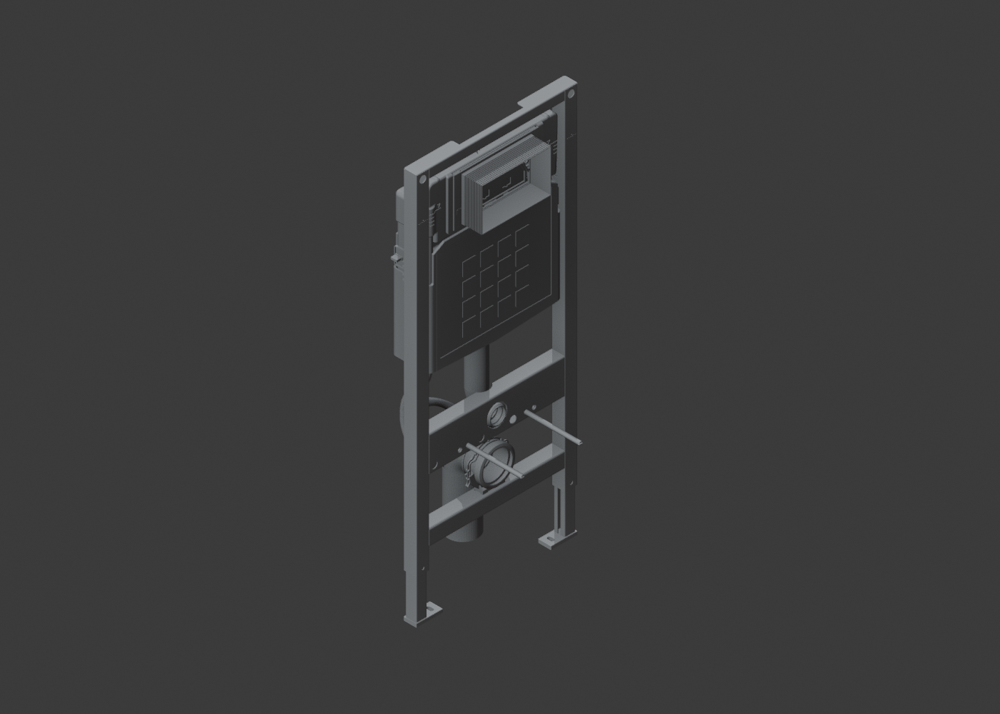

Geberit Duofix Sigma / 224.212.00.2
Blue line = exact official G/A/L native DWG. Visual review pending.
DWG / IFC mechanical overlay
Plan

Front

Side

Actual Bonsai camera renders
Bonsai Plan

Bonsai Front

Bonsai Side

Bonsai Iso

7a50b87e8f48a7c2bfbaa9f1dabdfca7155fa684b2325c66aa1ae15c8ab0a25c